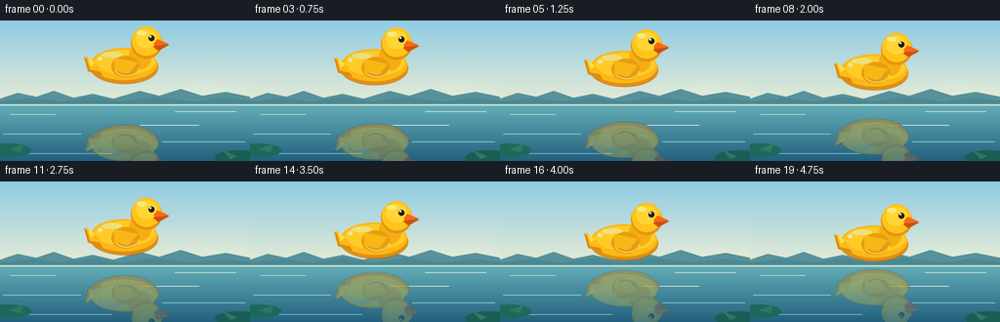
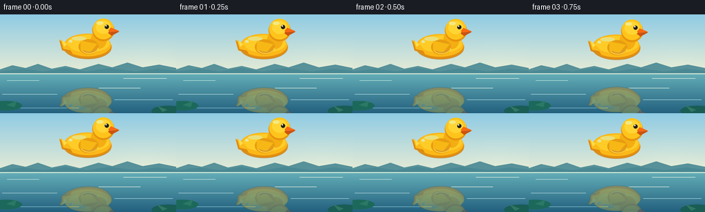
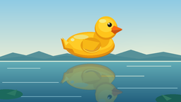

CODING AGENTS AS PIXEL WORLD MODELS
traex/GPT-5.6-Sol · phygen_065
点击播放 · 原生 RGB 像素
逐轮保存的候选
回放视频、检查图与代码变化。
每份候选均可单独播放。实际图片检查记录在下方工具轨迹中。
候选 01播放与检查图
点击播放 · 原生 RGB 像素


展开代码变化
--- 上一保存版本
+++ 本次保存版本
@@ -0,0 +1,199 @@
+from pathlib import Path
+import math
+import json
+import numpy as np
+from PIL import Image, ImageDraw, ImageFilter
+import artifact_io
+
+# Deterministic, hand-rendered animation. A supersampled canvas gives clean,
+# illustration-quality edges while preserving the required 256x144 RGB output.
+CASE_DIR = Path(__file__).resolve().parent
+SPEC = json.loads((CASE_DIR / "task_spec.json").read_text())
+W, H = SPEC["width"], SPEC["height"]
+N, FPS = SPEC["frames"], SPEC["fps"]
+SS = 4
+SW, SH = W * SS, H * SS
+WATER_Y = 86
+
+
+def scbox(box):
+ return tuple(int(round(v * SS)) for v in box)
+
+
+def polygon(draw, pts, fill):
+ draw.polygon([(int(x*SS), int(y*SS)) for x, y in pts], fill=fill)
+
+
+def ellipse(draw, box, fill, outline=None, width=1):
+ draw.ellipse(scbox(box), fill=fill, outline=outline, width=max(1, width*SS))
+
+
+def make_duck():
+ """Classic side-profile yellow rubber duck on a transparent tile."""
+ w, h = 92, 68
+ im = Image.new("RGBA", (w*SS, h*SS), (0, 0, 0, 0))
+ d = ImageDraw.Draw(im)
+
+ # Soft under-body amber shading first.
+ ellipse(d, (10, 27, 80, 62), (226, 143, 15, 255))
+ ellipse(d, (11, 25, 79, 58), (251, 184, 24, 255))
+ ellipse(d, (15, 27, 77, 52), (255, 204, 39, 255))
+
+ # Perky rubber tail at left, with its amber underside.
+ polygon(d, [(17, 44), (4, 34), (8, 49), (23, 54)], (224, 139, 13, 255))
+ polygon(d, [(17, 42), (6, 33), (10, 47), (24, 50)], (250, 187, 25, 255))
+ polygon(d, [(15, 40), (8, 35), (11, 44)], (255, 221, 73, 255))
+
+ # Neck bridge and head. Layered ellipses produce rounded toy volume.
+ ellipse(d, (50, 20, 73, 47), (244, 173, 18, 255))
+ ellipse(d, (52, 4, 84, 36), (230, 148, 14, 255))
+ ellipse(d, (53, 3, 83, 33), (255, 196, 27, 255))
+ ellipse(d, (57, 6, 79, 25), (255, 213, 52, 255))
+
+ # Beak (dark lower lip and bright top bill), facing right.
+ polygon(d, [(80, 17), (91, 22), (80, 28), (75, 24)], (205, 83, 13, 255))
+ polygon(d, [(79, 16), (91, 21), (79, 23), (75, 21)], (248, 105, 17, 255))
+ d.line([(79*SS, 23*SS), (88*SS, 22*SS)], fill=(177, 65, 12, 220), width=SS)
+
+ # Wing, integrated but readable.
+ ellipse(d, (32, 33, 61, 55), (232, 157, 16, 255))
+ polygon(d, [(35, 35), (59, 40), (49, 52), (35, 48)], (247, 184, 22, 255))
+ d.arc(scbox((34, 34, 61, 54)), 10, 151, fill=(255, 220, 69, 235), width=SS)
+ d.arc(scbox((37, 38, 57, 52)), 18, 138, fill=(213, 130, 12, 190), width=SS)
+
+ # Specular highlights make the surface read as molded rubber.
+ ellipse(d, (22, 29, 43, 35), (255, 225, 88, 190))
+ ellipse(d, (58, 7, 68, 12), (255, 237, 116, 225))
+ ellipse(d, (18, 34, 23, 38), (255, 237, 126, 160))
+
+ # Eye with a tiny catchlight.
+ ellipse(d, (70, 12, 76, 18), (35, 30, 22, 255))
+ ellipse(d, (71, 12.5, 73, 14.5), (255, 255, 232, 255))
+
+ # A warm contour under the belly adds separation from the reflection.
+ d.arc(scbox((12, 28, 80, 62)), 12, 168, fill=(191, 111, 10, 185), width=SS)
+ return im
+
+
+def make_background():
+ """Still, tranquil lakeside environment with a clearly defined water plane."""
+ arr = np.zeros((SH, SW, 3), dtype=np.float32)
+ wy = WATER_Y * SS
+ # Pale cyan sky, warming toward the horizon.
+ top = np.array([143, 203, 228], dtype=float)
+ horizon = np.array([231, 236, 213], dtype=float)
+ for y in range(wy):
+ u = y / max(1, wy-1)
+ c = top*(1-u) + horizon*u
+ # subtle sunlit glow from upper-right, not animated
+ x = np.arange(SW) / SS
+ glow = np.exp(-((x-211)/50)**2) * (u**2) * 7
+ arr[y, :, :] = c + glow[:, None] * np.array([1.0, .72, .28])
+
+ # Calm lake gradient: light at the plane, deeper blue below.
+ wtop = np.array([100, 174, 184], dtype=float)
+ wbottom = np.array([35, 96, 126], dtype=float)
+ for y in range(wy, SH):
+ u = (y-wy) / max(1, SH-wy-1)
+ c = wtop*(1-u) + wbottom*u
+ arr[y, :, :] = c
+ arr = np.clip(arr, 0, 255).astype(np.uint8)
+ bg = Image.fromarray(arr, "RGB").convert("RGBA")
+ d = ImageDraw.Draw(bg, "RGBA")
+
+ # Distant hazy hills terminate exactly at the horizon.
+ polygon(d, [(0, 80), (18, 74), (37, 78), (55, 72), (75, 79),
+ (95, 75), (116, 80), (143, 72), (163, 77), (185, 70),
+ (207, 77), (231, 73), (256, 78), (256, 87), (0, 87)],
+ (87, 145, 153, 105))
+ polygon(d, [(0, 83), (34, 79), (63, 83), (94, 78), (125, 83),
+ (159, 78), (197, 83), (228, 79), (256, 82), (256, 87), (0, 87)],
+ (74, 137, 148, 110))
+
+ # Crisp, level waterline and fixed glassy horizontal glints.
+ d.rectangle((0, WATER_Y*SS, SW, WATER_Y*SS+SS), fill=(213, 233, 215, 180))
+ glints = [
+ (10, 96, 57, (186, 224, 218, 34)), (179, 93, 242, (220, 237, 221, 38)),
+ (3, 116, 83, (171, 212, 216, 25)), (166, 124, 251, (160, 211, 219, 24)),
+ (25, 136, 115, (132, 190, 205, 24)), (143, 107, 204, (224, 238, 220, 26)),
+ ]
+ for x1, y, x2, col in glints:
+ d.rounded_rectangle((x1*SS, y*SS, x2*SS, y*SS+max(1,SS//2)), radius=SS//2, fill=col)
+
+ # Sparse foreground lily pads frame, but do not compete with, the duck.
+ ellipse(d, (-15, 126, 32, 140), (28, 105, 92, 150))
+ polygon(d, [(9, 132), (24, 126), (21, 135)], (43, 120, 100, 160))
+ ellipse(d, (220, 133, 269, 148), (25, 93, 85, 145))
+ polygon(d, [(243, 139), (228, 133), (236, 142)], (48, 119, 98, 145))
+ return bg
+
+
+def reflected_tile(sprite):
+ """Tint, soften, and vertically fade a mirrored duck for calm water."""
+ ref = sprite.transpose(Image.Transpose.FLIP_TOP_BOTTOM)
+ a = np.asarray(ref).copy()
+ rgb = a[..., :3].astype(np.float32)
+ water_tint = np.array([57, 122, 139], dtype=np.float32)
+ rgb = rgb * 0.70 + water_tint * 0.30
+ a[..., :3] = np.clip(rgb, 0, 255).astype(np.uint8)
+ # Reflection is strongest nearest the surface (top of the flipped tile).
+ fade = np.linspace(0.66, 0.23, a.shape[0], dtype=np.float32)[:, None]
+ a[..., 3] = np.clip(a[..., 3].astype(np.float32) * fade, 0, 255).astype(np.uint8)
+ return Image.fromarray(a, "RGBA").filter(ImageFilter.GaussianBlur(0.32*SS))
+
+
+def water_distort(tile, phase):
+ """Very restrained horizontal refraction; water still reads as calm."""
+ a = np.asarray(tile)
+ out = np.zeros_like(a)
+ for yy in range(a.shape[0]):
+ y = yy / SS
+ # under two source pixels of displacement, with two broad wave scales
+ shift = int(round(SS * (0.70*math.sin(y*0.28 + phase) +
+ 0.25*math.sin(y*0.73 + phase*0.45))))
+ out[yy] = np.roll(a[yy], shift, axis=0)
+ return Image.fromarray(out, "RGBA")
+
+
+def compose_frame(index, sprite, reflection, background):
+ # Ease-in/ease-out but strictly approach the water throughout all 20 frames.
+ t = index / (N-1)
+ ease = t*t*(3.0-2.0*t)
+ # Sprite bottom opaque pixel moves from about y=65 to y=82; no contact/splash.
+ duck_x = 82
+ duck_y = 3.0 + 17.0*ease
+ x = int(round(duck_x*SS))
+ y = int(round(duck_y*SS))
+
+ frame = background.copy()
+
+ # Exact planar reflection placement: every duck point and reflected point have
+ # equal, opposite distance from y=WATER_Y. Hence the two approach synchronously.
+ ref_y = int(round((2*WATER_Y - duck_y - 68)*SS))
+ phase = 0.45 + index*0.035 # tiny optical shimmer; center motion remains exact
+ refracted = water_distort(reflection, phase)
+ frame.alpha_composite(refracted, (x, ref_y))
+
+ # A narrow fixed surface sheen overlays reflection at the water plane.
+ shine = Image.new("RGBA", frame.size, (0,0,0,0))
+ sd = ImageDraw.Draw(shine, "RGBA")
+ sd.line([(0, WATER_Y*SS), (SW, WATER_Y*SS)], fill=(229, 241, 220, 100), width=SS)
+ frame = Image.alpha_composite(frame, shine)
+
+ # Main duck remains undistorted and crisply separated above the surface.
+ frame.alpha_composite(sprite, (x, y))
+
+ return np.asarray(frame.convert("RGB").resize((W, H), Image.Resampling.LANCZOS), dtype=np.uint8)
+
+
+def main():
+ sprite = make_duck()
+ reflection = reflected_tile(sprite)
+ background = make_background()
+ frames = np.stack([compose_frame(i, sprite, reflection, background) for i in range(N)])
+ assert frames.shape == (N, H, W, 3) and frames.dtype == np.uint8
+ artifact_io.save(frames, CASE_DIR)
+
+
+if __name__ == "__main__":
+ main()
可观测工具轨迹
实际执行的命令与返回图片。
命令 1exit 0
/bin/bash -lc "cat prompt.txt && printf '\\n--- GENERATION_RULES.md ---\\n' && cat GENERATION_RULES.md"
命令 2exit 0
/bin/bash -lc "cat task_spec.json && printf '\\n--- FILES ---\\n' && find . -maxdepth 2 -type f -printf '%p\\n' | sort"
命令 3exit 0
/bin/bash -lc "sed -n '1,240p' artifact_io.py"
命令 4exit 0
/bin/bash -lc "python - <<'PY'
try:
import aggdraw; print('aggdraw yes')
except Exception as e: print('aggdraw no', e)
import PIL, numpy
print(PIL.__version__, numpy.__version__)
PY"命令 5exit 0
/bin/bash -lc "cat > generate.py <<'PY'
from pathlib import Path
import math
import json
import numpy as np
from PIL import Image, ImageDraw, ImageFilter
import artifact_io
# Deterministic, hand-rendered animation. A supersampled canvas gives clean,
# illustration-quality edges while preserving the required 256x144 RGB output.
CASE_DIR = Path(__file__).resolve().parent
SPEC = json.loads((CASE_DIR / \"task_spec.json\").read_text())
W, H = SPEC[\"width\"], SPEC[\"height\"]
N, FPS = SPEC[\"frames\"], SPEC[\"fps\"]
SS = 4
SW, SH = W * SS, H * SS
WATER_Y = 86
def scbox(box):
return tuple(int(round(v * SS)) for v in box)
def polygon(draw, pts, fill):
draw.polygon([(int(x*SS), int(y*SS)) for x, y in pts], fill=fill)
def ellipse(draw, box, fill, outline=None, width=1):
draw.ellipse(scbox(box), fill=fill, outline=outline, width=max(1, width*SS))
def make_duck():
\"\"\"Classic side-profile yellow rubber duck on a transparent tile.\"\"\"
w, h = 92, 68
im = Image.new(\"RGBA\", (w*SS, h*SS), (0, 0, 0, 0))
d = ImageDraw.Draw(im)
# Soft under-body amber shading first.
ellipse(d, (10, 27, 80, 62), (226, 143, 15, 255))
ellipse(d, (11, 25, 79, 58), (251, 184, 24, 255))
ellipse(d, (15, 27, 77, 52), (255, 204, 39, 255))
# Perky rubber tail at left, with its amber underside.
polygon(d, [(17, 44), (4, 34), (8, 49), (23, 54)], (224, 139, 13, 255))
polygon(d, [(17, 42), (6, 33), (10, 47), (24, 50)], (250, 187, 25, 255))
polygon(d, [(15, 40), (8, 35), (11, 44)], (255, 221, 73, 255))
# Neck bridge and head. Layered ellipses produce rounded toy volume.
ellipse(d, (50, 20, 73, 47), (244, 173, 18, 255))
ellipse(d, (52, 4, 84, 36), (230, 148, 14, 255))
ellipse(d, (53, 3, 83, 33), (255, 196, 27, 255))
ellipse(d, (57, 6, 79, 25), (255, 213, 52, 255))
# Beak (dark lower lip and bright top bill), facing right.
polygon(d, [(80, 17), (91, 22), (80, 28), (75, 24)], (205, 83, 13, 255))
polygon(d, [(79, 16), (91, 21), (79, 23), (75, 21)], (248, 105, 17, 255))
d.line([(79*SS, 23*SS), (88*SS, 22*SS)], fill=(177, 65, 12, 220), width=SS)
# Wing, integrated but readable.
ellipse(d, (32, 33, 61, 55), (232, 157, 16, 255))
polygon(d, [(35, 35), (59, 40), (49, 52), (35, 48)], (247, 184, 22, 255))
d.arc(scbox((34, 34, 61, 54)), 10, 151, fill=(255, 220, 69, 235), width=SS)
d.arc(scbox((37, 38, 57, 52)), 18, 138, fill=(213, 130, 12, 190), width=SS)
# Specular highlights make the surface read as molded rubber.
ellipse(d, (22, 29, 43, 35), (255, 225, 88, 190))
ellipse(d, (58, 7, 68, 12), (255, 237, 116, 225))
ellipse(d, (18, 34, 23, 38), (255, 237, 126, 160))
# Eye with a tiny catchlight.
ellipse(d, (70, 12, 76, 18), (35, 30, 22, 255))
ellipse(d, (71, 12.5, 73, 14.5), (255, 255, 232, 255))
# A warm contour under the belly adds separation from the reflection.
d.arc(scbox((12, 28, 80, 62)), 12, 168, fill=(191, 111, 10, 185), width=SS)
return im
def make_background():
\"\"\"Still, tranquil lakeside environment with a clearly defined water plane.\"\"\"
arr = np.zeros((SH, SW, 3), dtype=np.float32)
wy = WATER_Y * SS
# Pale cyan sky, warming toward the horizon.
top = np.array([143, 203, 228], dtype=float)
horizon = np.array([231, 236, 213], dtype=float)
for y in range(wy):
u = y / max(1, wy-1)
c = top*(1-u) + horizon*u
# subtle sunlit glow from upper-right, not animated
x = np.arange(SW) / SS
glow = np.exp(-((x-211)/50)**2) * (u**2) * 7
arr[y, :, :] = c + glow[:, None] * np.array([1.0, .72, .28])
# Calm lake gradient: light at the plane, deeper blue below.
wtop = np.array([100, 174, 184], dtype=float)
wbottom = np.array([35, 96, 126], dtype=float)
for y in range(wy, SH):
u = (y-wy) / max(1, SH-wy-1)
c = wtop*(1-u) + wbottom*u
arr[y, :, :] = c
arr = np.clip(arr, 0, 255).astype(np.uint8)
bg = Image.fromarray(arr, \"RGB\").convert(\"RGBA\")
d = ImageDraw.Draw(bg, \"RGBA\")
# Distant hazy hills terminate exactly at the horizon.
polygon(d, [(0, 80), (18, 74), (37, 78), (55, 72), (75, 79),
(95, 75), (116, 80), (143, 72), (163, 77), (185, 70),
(207, 77), (231, 73), (256, 78), (256, 87), (0, 87)],
(87, 145, 153, 105))
polygon(d, [(0, 83), (34, 79), (63, 83), (94, 78), (125, 83),
(159, 78), (197, 83), (228, 79), (256, 82), (256, 87), (0, 87)],
(74, 137, 148, 110))
# Crisp, level waterline and fixed glassy horizontal glints.
d.rectangle((0, WATER_Y*SS, SW, WATER_Y*SS+SS), fill=(213, 233, 215, 180))
glints = [
(10, 96, 57, (186, 224, 218, 34)), (179, 93, 242, (220, 237, 221, 38)),
(3, 116, 83, (171, 212, 216, 25)), (166, 124, 251, (160, 211, 219, 24)),
(25, 136, 115, (132, 190, 205, 24)), (143, 107, 204, (224, 238, 220, 26)),
]
for x1, y, x2, col in glints:
d.rounded_rectangle((x1*SS, y*SS, x2*SS, y*SS+max(1,SS//2)), radius=SS//2, fill=col)
# Sparse foreground lily pads frame, but do not compete with, the duck.
ellipse(d, (-15, 126, 32, 140), (28, 105, 92, 150))
polygon(d, [(9, 132), (24, 126), (21, 135)], (43, 120, 100, 160))
ellipse(d, (220, 133, 269, 148), (25, 93, 85, 145))
polygon(d, [(243, 139), (228, 133), (236, 142)], (48, 119, 98, 145))
return bg
def reflected_tile(sprite):
\"\"\"Tint, soften, and vertically fade a mirrored duck for calm water.\"\"\"
ref = sprite.transpose(Image.Transpose.FLIP_TOP_BOTTOM)
a = np.asarray(ref).copy()
rgb = a[..., :3].astype(np.float32)
water_tint = np.array([57, 122, 139], dtype=np.float32)
rgb = rgb * 0.70 + water_tint * 0.30
a[..., :3] = np.clip(rgb, 0, 255).astype(np.uint8)
# Reflection is strongest nearest the surface (top of the flipped tile).
fade = np.linspace(0.66, 0.23, a.shape[0], dtype=np.float32)[:, None]
a[..., 3] = np.clip(a[..., 3].astype(np.float32) * fade, 0, 255).astype(np.uint8)
return Image.fromarray(a, \"RGBA\").filter(ImageFilter.GaussianBlur(0.32*SS))
def water_distort(tile, phase):
\"\"\"Very restrained horizontal refraction; water still reads as calm.\"\"\"
a = np.asarray(tile)
out = np.zeros_like(a)
for yy in range(a.shape[0]):
y = yy / SS
# under two source pixels of displacement, with two broad wave scales
shift = int(round(SS * (0.70*math.sin(y*0.28 + phase) +
0.25*math.sin(y*0.73 + phase*0.45))))
out[yy] = np.roll(a[yy], shift, axis=0)
return Image.fromarray(out, \"RGBA\")
def compose_frame(index, sprite, reflection, background):
# Ease-in/ease-out but strictly approach the water throughout all 20 frames.
t = index / (N-1)
ease = t*t*(3.0-2.0*t)
# Sprite bottom opaque pixel moves from about y=65 to y=82; no contact/splash.
duck_x = 82
duck_y = 3.0 + 17.0*ease
x = int(round(duck_x*SS))
y = int(round(duck_y*SS))
frame = background.copy()
# Exact planar reflection placement: every duck point and reflected point have
# equal, opposite distance from y=WATER_Y. Hence the two approach synchronously.
ref_y = int(round((2*WATER_Y - duck_y - 68)*SS))
phase = 0.45 + index*0.035 # tiny optical shimmer; center motion remains exact
refracted = water_distort(reflection, phase)
frame.alpha_composite(refracted, (x, ref_y))
# A narrow fixed surface sheen overlays reflection at the water plane.
shine = Image.new(\"RGBA\", frame.size, (0,0,0,0))
sd = ImageDraw.Draw(shine, \"RGBA\")
sd.line([(0, WATER_Y*SS), (SW, WATER_Y*SS)], fill=(229, 241, 220, 100), width=SS)
frame = Image.alpha_composite(frame, shine)
# Main duck remains undistorted and crisply separated above the surface.
frame.alpha_composite(sprite, (x, y))
return np.asarray(frame.convert(\"RGB\").resize((W, H), Image.Resampling.LANCZOS), dtype=np.uint8)
def main():
sprite = make_duck()
reflection = reflected_tile(sprite)
background = make_background()
frames = np.stack([compose_frame(i, sprite, reflection, background) for i in range(N)])
assert frames.shape == (N, H, W, 3) and frames.dtype == np.uint8
artifact_io.save(frames, CASE_DIR)
if __name__ == \"__main__\":
main()
PY
python generate.py
ls -lh pixels.npz index.html inspection.png frames/00.png frames/19.png"命令 6exit 0
/bin/bash -lc "python - <<'PY'
from pathlib import Path
import numpy as np
from PIL import Image
p=Path('.')
z=np.load('pixels.npz')['pixels']
imgs=[np.asarray(Image.open(f'frames/{i:02d}.png').convert('RGB')) for i in range(20)]
a=np.stack(imgs)
print('frame_stack', a.shape, a.dtype)
print('packed_tensor', z.shape, z.dtype)
print('all_frames_unique', len({x.tobytes() for x in a}) == 20)
print('required_artifacts', {x: (p/x).exists() for x in ['generate.py','pixels.npz','index.html','inspection.png','transition_check.png']})
# Confirm packed pixels reproduce exported RGB frames exactly.
r=((z.transpose(2,0,1)>>16)&255).astype(np.uint8)
g=((z.transpose(2,0,1)>>8)&255).astype(np.uint8)
b=(z.transpose(2,0,1)&255).astype(np.uint8)
print('npz_matches_pngs', np.array_equal(np.stack([r,g,b],axis=-1), a))
PY"视觉工具实际返回图片 1

视觉工具实际返回图片 2

保存候选 1 份；完成命令 6 次；可验证图片返回 2 张。原始 API 响应与完整日志保留在本地。